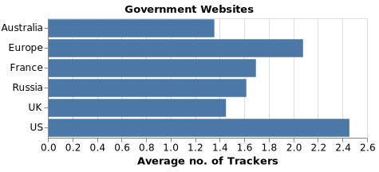

If you are not the product, you're the taxpayer
This post is one of our regular monthly blogs accompanying an update to the data displayed on WhoTracks.Me. In these posts we introduce what data has been added as well as point out interesting trends and case-studies we found in the last month.
On WhoTracks.me we typically profile websites where we see presence of tracking. One new category of site we observed loading trackers this month was government websites. Government websites act as information portals, allowing citizens to access information or services from their government. In some cases the use of government sites will be mandatory, for example services set up for submitting tax or visa information. Thus, it is concerning that we see third-party tracking appearing on these sites, where users do not have a choice whether or not they access the service, and are then forced to hand over data to third-party companies by their governments.

Average number of trackers seen on selected government websites from the WhoTracks.Me September dataset.
Here's a list of the government websites ending up in this month's release:
| Country | Site | Notable trackers |
|---|---|---|
| Australia | bom.gov.au | Google Analytics, Doubleclick |
| Europe | europa.eu | Google Analytics, Google, Twitter |
| France | ants.gouv.fr | Google Analytics, Doubleclick |
| France | legifrance.gouv.fr | AT Internet |
| France | impots.gouv.fr | AT Internet |
| Russia | zakupki.gov.ru | Yandex |
| UK | tax.service.gov.uk | Google Analytics, Optimizely |
| US | ca.gov | Google Analytics, Google, AddThis |
| US | dhs.gov | Google Analytics, Doubleclick |
| US | irs.gov | Google Analytics, New Relic, AddToAny, Youtube, Foresee |
| US | nih.gov | Google Analytics, Doubleclick, Google |
| US | noaa.gov | Google Analytics |
| US | state.gov | Google Analytics, Google, Youtube, Qualtrics |
| US | weather.gov | Google Analytics, AddThis |
It also surprised us that Germany (where the majority of our contributors reside) does not appear. A brief check of a few sites like bundestag.de and the Federal Tax Office shows a preference for self-hosted analytics, such as Matomo, rather than third-party solutions.
Note that, as we do not collect data about pages with no third-party trackers, the data we show here may be biased for sites where sensitive areas do not have tracking. Further study would be required to access whether the tracking reported here leaks sensitive information when accessing public services. However, the presence of tracking on these pages is enough to leak valuable metadata about citizens to third-party companies. We should be asking if it is acceptable for our governments to expose us to this risk...